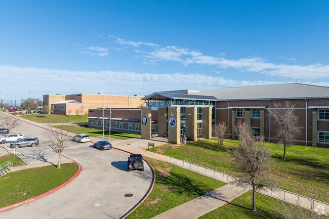

1. 주요 지역과 국제학교
· 두바이 (Dubai)
두바이 아메리칸 아카데미(DAA, 미국식·IB), GEMS 계열 학교 다수, 렙튼 스쿨(영국계), 두바이 컬리지(영국계·A-Level), 킹스 스쿨, 두바이 잉글리시 스피킹 칼리지, 노드앙글리아 등.
· 아부다비 (Abu Dhabi)
아메리칸 커뮤니티 스쿨(ACS), 브라이턴 칼리지 아부다비, 크랜리 아부다비 등.

국제학교 캠퍼스 전경
2. 학교 고르기 — KHDA 등급과 커리큘럼
· KHDA 등급
두바이 교육당국(KHDA)이 학교를 Outstanding · Very Good · Good · Acceptable · Weak로 평가해 매년 공개합니다. 학비가 비싸다고 등급이 높은 것은 아니므로 반드시 확인하세요.
· 커리큘럼
· 미국식·AP — DAA, ACS 등. 알지브라 → 지오메트리 → 알지브라 2 → 프리캘큘러스 → AP 미적분. GPA 4년 누적.
· 영국계·IGCSE/A-Level — 두바이 컬리지, 렙튼 등. IGCSE 후 A-Level 3~4과목.
· IB — 다수 학교. IB Math AA/AI, 내부평가(IA)·확장에세이(EE)·TOK.
3. G1~G12 학년별 준비 로드맵
영어 리딩·라이팅 기초와 수학 영어 용어. 아랍어가 필수 과목인 학교가 많아 3개 언어를 병행합니다. 한국어 유지도 함께 챙기세요.
알지브라(Algebra)·지오메트리(Geometry) 시작. 영어는 에세이 구조 훈련. IB 학교는 MYP, 영국계는 IGCSE 진입 준비.
미국식은 GPA 누적 시작, 영국계는 IGCSE 본과정, IB는 DP 과목 선택 준비. 수학은 알지브라 2·프리캘큘러스, 과학 분화.
AP / A-Level / IB DP 본과정과 대학 지원. 미국 방향은 SAT/ACT + 원서 에세이, 영국 방향은 UCAS 퍼스널 스테이트먼트. IB는 수학 IA·EE 관리가 핵심.

국제학교 캠퍼스
4. 과목별 준비 방법 — 전 과목 관리
알지브라 1·2 · 지오메트리 · 프리캘큘러스 · 미적분(Calculus) · AP Calculus AB/BC · AP 통계 · IB Math AA/AI(HL·SL) · IGCSE/A-Level Maths·Further Maths. 영어 용어와 서술형 풀이를 함께 잡습니다.
리딩 · 에세이 라이팅·첨삭 · 문학 분석 · IB English · 확장에세이(EE) · AP English · SAT/ACT · UCAS 퍼스널 스테이트먼트 · 면접(인터뷰).
물리·화학·생물 (IB/AP/IGCSE·A-Level). 개념+영어 용어, 랩 리포트와 과학 IA 관리.
아랍어·프랑스어·스페인어. 경제(Economics), 경영, 컴퓨터과학. 한국어(IB Korean A)와 귀국 대비 한국 교과 병행 가능.
5. 입학·편입 준비
· 입학시험 — 영어(리딩·라이팅), 수학 배치고사(알지브라·지오메트리 범위), 인터뷰, 이전 성적. 많은 학교가 CAT4·MAP을 사용합니다.
· 자리 — 등급 높은 학교는 대기자가 있습니다. 이동 시기가 정해졌다면 미리 알아보세요.

국제학교 캠퍼스 전경
6. 시차와 화상과외
두바이와 한국의 시차는 5시간입니다. 두바이의 방과 후 오후 시간이 한국의 저녁 시간대와 맞아 수업 일정을 잡을 수 있습니다. 중동 지역은 한국어로 국제학교 커리큘럼을 다루는 학원이 거의 없어, 1:1 화상과외가 사실상 유일한 선택인 경우가 많습니다. 개념은 한국어로 정확히, 용어는 영어로 잡습니다.